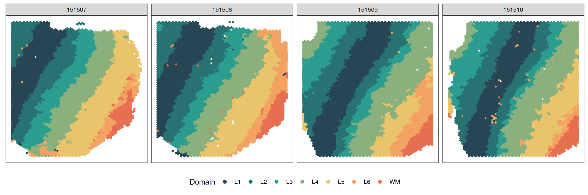

Last updated: 2022-06-12
Checks: 7 0
Knit directory: BASS-analysis/
This reproducible R Markdown analysis was created with workflowr (version 1.7.0). The Checks tab describes the reproducibility checks that were applied when the results were created. The Past versions tab lists the development history.
Great! Since the R Markdown file has been committed to the Git repository, you know the exact version of the code that produced these results.
Great job! The global environment was empty. Objects defined in the global environment can affect the analysis in your R Markdown file in unknown ways. For reproduciblity it’s best to always run the code in an empty environment.
The command set.seed(0) was run prior to running the
code in the R Markdown file. Setting a seed ensures that any results
that rely on randomness, e.g. subsampling or permutations, are
reproducible.
Great job! Recording the operating system, R version, and package versions is critical for reproducibility.
Nice! There were no cached chunks for this analysis, so you can be confident that you successfully produced the results during this run.
Great job! Using relative paths to the files within your workflowr project makes it easier to run your code on other machines.
Great! You are using Git for version control. Tracking code development and connecting the code version to the results is critical for reproducibility.
The results in this page were generated with repository version 829d10c. See the Past versions tab to see a history of the changes made to the R Markdown and HTML files.
Note that you need to be careful to ensure that all relevant files for
the analysis have been committed to Git prior to generating the results
(you can use wflow_publish or
wflow_git_commit). workflowr only checks the R Markdown
file, but you know if there are other scripts or data files that it
depends on. Below is the status of the Git repository when the results
were generated:
working directory clean
Note that any generated files, e.g. HTML, png, CSS, etc., are not included in this status report because it is ok for generated content to have uncommitted changes.
These are the previous versions of the repository in which changes were
made to the R Markdown (analysis/DLPFC.Rmd) and HTML
(docs/DLPFC.html) files. If you’ve configured a remote Git
repository (see ?wflow_git_remote), click on the hyperlinks
in the table below to view the files as they were in that past version.
| File | Version | Author | Date | Message |
|---|---|---|---|---|
| Rmd | 829d10c | zhengli09 | 2022-06-12 | Update real data analysis |
| Rmd | 2f2db0d | zhengli09 | 2022-03-05 | Separate spatialLIBD data into three parts, each corresponding to an |
| Rmd | 4b90802 | zhengli09 | 2022-03-05 | Add DLPFC analysis |
| html | b6853e0 | zhengli09 | 2022-03-05 | Build site. |
| html | 48fb04e | zhengli09 | 2022-03-05 | Build site. |
Here, we apply BASS to analyze the human dorsolateral prefrontal cortex (DLPFC) data by 10x Visium from Maynard et al., 2021. DLPFC data contains expression values of 33,538 genes measured on two pairs of tissue sections from three independent neurotypical adult donors. Each pair consisted of two directly adjacent, 10 \(\mu m\) serial tissue sections with the second pair located 300 \(\mu m\) posterior to the first, resulting in a total of 12 tissue sections. The original data can be downloaded from here. We excluded spots that were not mapped to the tissue region in the histology image and retained a total of 33,538 genes measured on 4,226 (151507), 4,384 (151508), 4,789 (151509), 4,634 (151510), 3,661 (151669), 3,498 (151670), 4,110 (151671), 4,015 (151672), 3,639 (151673), 3,673 (151674), 3,592 (151675), and 3,460 (151676) spots along with their spatial locations for further analysis. The processed data can be found at the data directory. We focused our analysis only on spatial domain detection because the clustering of spatial spots no longer has the cell type interpretation. For single-sample analysis, we analyzed each of the 12 tissue sections separately. For multi-sample analysis, we jointly analyzed four tissue sections from each adult donor because they contain similar tissue structures.
library(BASS)
library(Matrix)
# cntm: a list of expression count matrices for 4 tissue sections
# (151507-151510) from the same individual
# infom: a list of manually annotated labels of seven laminar
# clusters by the original study for 4 tissue sections
# (151507-151510) from the same individual
# xym: a list of spatial coordinates for 4 tissue sections
# (151507-151510) from the same individual
load("data/spatialLIBD_p1.RData")
# hyper-parameters
# We set the number of cell types to a relatively large
# number (20) to capture the expression heterogeneity.
C <- 20
# number of spatial domains
R <- 7set.seed(0)
# Set up BASS object
BASS <- createBASSObject(cntm, xym, C = C, R = R,
beta_method = "SW", init_method = "mclust",
nsample = 10000)***************************************
INPUT INFO:
- Number of tissue sections: 4
- Number of cells/spots: 4226 4384 4789 4634
- Number of genes: 33538
- Potts interaction parameter estimation method: SW
- Estimate Potts interaction parameter with SW algorithm
To list all hyper-parameters, Type listAllHyper(BASS_object)
***************************************# Data pre-processing:
# 1.Library size normalization followed with a log2 transformation
# 2.Select top 3000 spatially expressed genes with SPARK-X
# 3.Dimension reduction with PCA
BASS <- BASS.preprocess(BASS, doLogNormalize = TRUE,
geneSelect = "sparkx", nSE = 3000, doPCA = TRUE,
scaleFeature = FALSE, nPC = 20)***** Log-normalize gene expression data *****
***** Select spatially expressed genes with sparkx *****
***** Exclude genes with 0 expression *****
***** Reduce data dimension with PCA *****
***** Correct batch effect with Harmony *****# Run BASS algorithm
BASS <- BASS.run(BASS)# post-process posterior samples:
# 1.Adjust for label switching with the ECR-1 algorithm
# 2.Summarize the posterior samples to obtain the spatial domain labels
BASS <- BASS.postprocess(BASS)Post-processing...
donezlabels <- BASS@results$z # spatial domain labelsYou can refer to visualization for some useful plotting functions or you can write your own code for plotting.
library(ggplot2)
source("code/viz.R")zlabels <- lapply(zlabels, function(zlabels.l){
zlabels.l <- factor(zlabels.l)
levels(zlabels.l) <- c("L3", "L1", "L5", "L2", "L4", "WM", "L6")
zlabels.l <- factor(zlabels.l, levels = c(
"L1", "L2", "L3", "L4", "L5", "L6", "WM"
))
})
cols <- c("#264653", "#287271", "#2a9d8f", "#8ab17d",
"#e9c46a", "#f4a261", "#e76f51")
smps <- c("151507", "151508", "151509", "151510")
plotClustersFacet(xym, zlabels, smps, size = 1) +
scale_color_manual("Domain", values = cols) +
guides(color = guide_legend(nrow = 1,
override.aes = list(size = 2)))
sessionInfo()R version 4.2.0 (2022-04-22)
Platform: x86_64-pc-linux-gnu (64-bit)
Running under: Ubuntu 18.04.5 LTS
Matrix products: default
BLAS: /usr/lib/x86_64-linux-gnu/openblas/libblas.so.3
LAPACK: /usr/lib/x86_64-linux-gnu/libopenblasp-r0.2.20.so
locale:
[1] LC_CTYPE=en_US.UTF-8 LC_NUMERIC=C
[3] LC_TIME=en_US.UTF-8 LC_COLLATE=en_US.UTF-8
[5] LC_MONETARY=en_US.UTF-8 LC_MESSAGES=en_US.UTF-8
[7] LC_PAPER=en_US.UTF-8 LC_NAME=C
[9] LC_ADDRESS=C LC_TELEPHONE=C
[11] LC_MEASUREMENT=en_US.UTF-8 LC_IDENTIFICATION=C
attached base packages:
[1] stats graphics grDevices utils datasets methods base
other attached packages:
[1] ggplot2_3.3.5 Matrix_1.4-1 BASS_1.1.0 GIGrvg_0.5
[5] workflowr_1.7.0
loaded via a namespace (and not attached):
[1] bitops_1.0-7 matrixStats_0.61.0
[3] fs_1.5.2 doParallel_1.0.15
[5] httr_1.4.2 rprojroot_2.0.2
[7] GenomeInfoDb_1.24.2 tools_4.2.0
[9] bslib_0.3.1 utf8_1.2.2
[11] R6_2.5.1 irlba_2.3.3
[13] matlab_1.0.2 vipor_0.4.5
[15] DBI_1.1.1 BiocGenerics_0.38.0
[17] colorspace_2.0-3 withr_2.4.3
[19] label.switching_1.8 tidyselect_1.1.2
[21] gridExtra_2.3 processx_3.5.2
[23] compiler_4.2.0 git2r_0.28.0
[25] cli_3.2.0 Biobase_2.48.0
[27] SPARK_1.1.1 BiocNeighbors_1.6.0
[29] DelayedArray_0.18.0 labeling_0.4.2
[31] sass_0.4.1 scales_1.1.1
[33] callr_3.7.0 stringr_1.4.0
[35] digest_0.6.29 rmarkdown_2.12.1
[37] harmony_0.1.0 XVector_0.32.0
[39] scater_1.16.2 pkgconfig_2.0.3
[41] htmltools_0.5.2 sparseMatrixStats_1.8.0
[43] MatrixGenerics_1.4.3 highr_0.9
[45] fastmap_1.1.0 rlang_1.0.1
[47] rstudioapi_0.13 DelayedMatrixStats_1.14.3
[49] farver_2.1.0 jquerylib_0.1.4
[51] generics_0.1.2 combinat_0.0-8
[53] jsonlite_1.8.0 mclust_5.4.9
[55] BiocParallel_1.22.0 dplyr_1.0.8
[57] RCurl_1.98-1.5 magrittr_2.0.2
[59] BiocSingular_1.4.0 GenomeInfoDbData_1.2.6
[61] Rcpp_1.0.8.3 ggbeeswarm_0.6.0
[63] munsell_0.5.0 S4Vectors_0.30.2
[65] fansi_1.0.2 viridis_0.5.1
[67] lifecycle_1.0.1 stringi_1.7.6
[69] whisker_0.4 yaml_2.3.5
[71] CompQuadForm_1.4.3 SummarizedExperiment_1.22.0
[73] zlibbioc_1.34.0 grid_4.2.0
[75] blob_1.2.1 parallel_4.2.0
[77] promises_1.1.1 crayon_1.5.0
[79] lattice_0.20-45 cowplot_1.1.1
[81] knitr_1.37 ps_1.6.0
[83] pillar_1.7.0 GenomicRanges_1.44.0
[85] lpSolve_5.6.15 codetools_0.2-18
[87] stats4_4.2.0 glue_1.6.2
[89] evaluate_0.15 getPass_0.2-2
[91] foreach_1.5.0 vctrs_0.3.8
[93] httpuv_1.5.4 tidyr_1.1.1
[95] gtable_0.3.0 purrr_0.3.4
[97] assertthat_0.2.1 xfun_0.29
[99] rsvd_1.0.3 pracma_2.2.9
[101] later_1.1.0.1 viridisLite_0.4.0
[103] SingleCellExperiment_1.14.1 tibble_3.1.6
[105] iterators_1.0.13 beeswarm_0.4.0
[107] IRanges_2.26.0 ellipsis_0.3.2